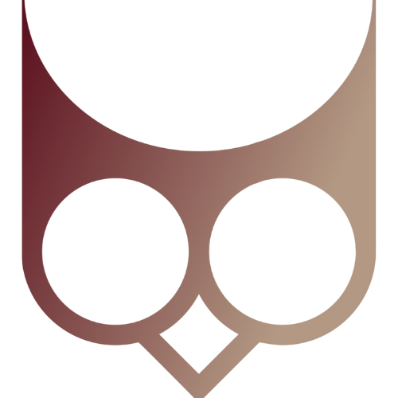

Location: 100% Remote
Company: Eulen.app
Eulen builds crypto-financial infrastructure for the sovereign individual — payments, tokenized settlement, and cross-border liquidity rails for the Global South.
Our core product is DePix: a privacy-centric payment token issued through banking nodes, operating on Bitcoin infrastructure (Liquid Network). We run systems that must stay up under pressure. We're profitable and growing.
We don't care about degrees or fancy resumes. We care about production results.
This is a hands-on Senior DevOps role for someone who owns production reliability — not just monitors it. You'll be the person who improves our operational posture, hardens our infrastructure, and makes it safe to deploy fast.
Your mission: increase availability and resiliency, reduce operational risk, automate everything possible.
Application window: Mar 10 → Apr 2, 2026
Phase 0 — Interest filter
Apr 3 (Fri noon BRT) → Apr 5 (Sat midnight BRT)
A short challenge to confirm you're paying attention. Instructions sent by email.
Phase 1 — Logic & math test
Apr 10–12 (Thu–Sat), 2026
Time-boxed. Intentionally hard. We rank candidates by score.
Phase 2 — Interview
Apr 14–18, 2026
With the engineering lead.
Send your CV / LinkedIn / GitHub and a short note (5–10 lines) on why you're the right fit to:
jobs@eulen.app — Subject: "Senior DevOps"